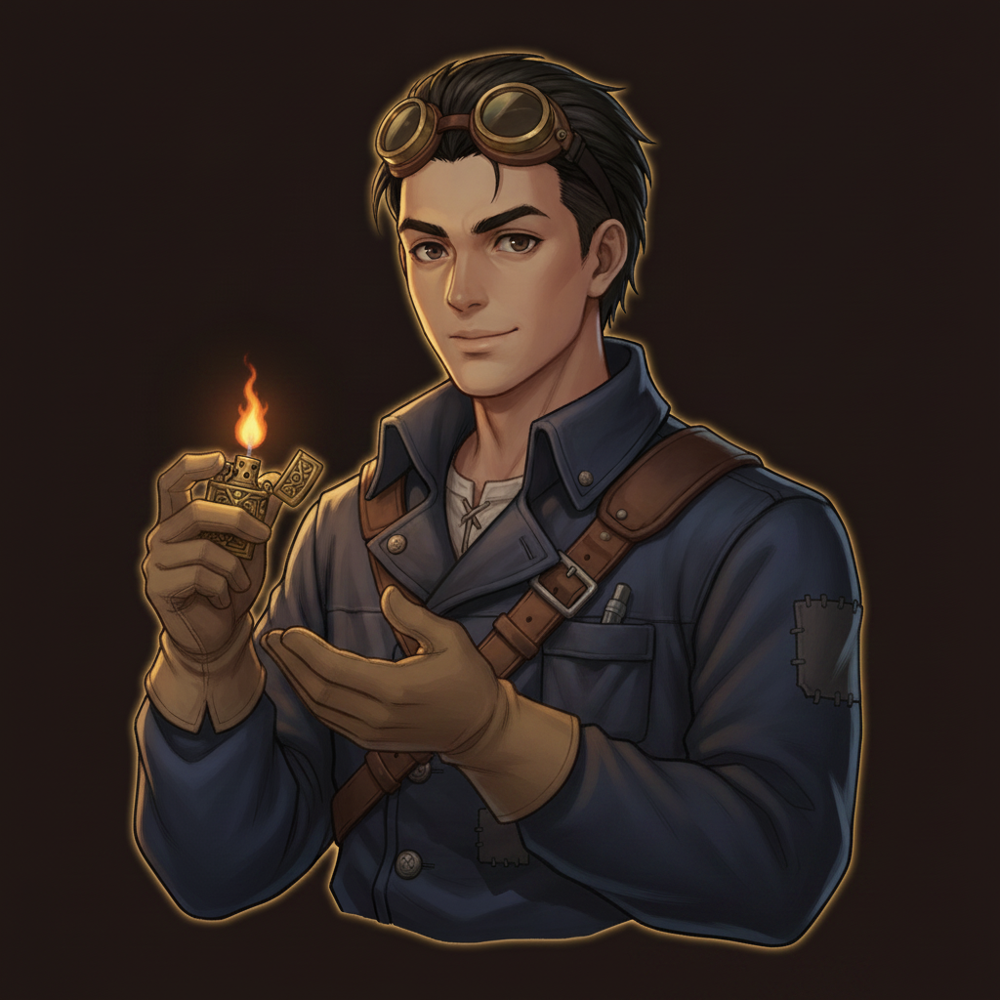
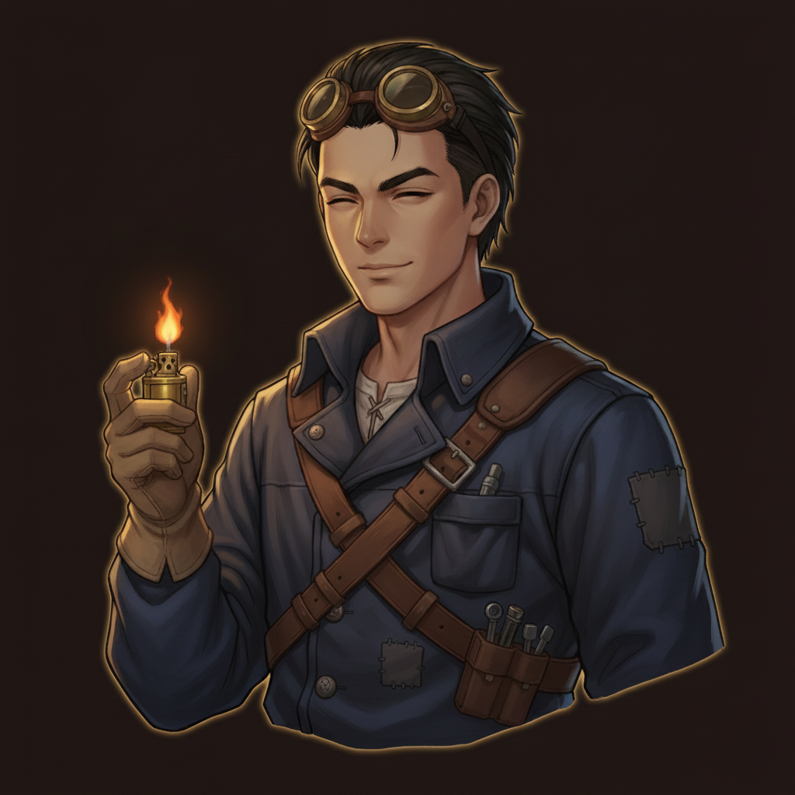
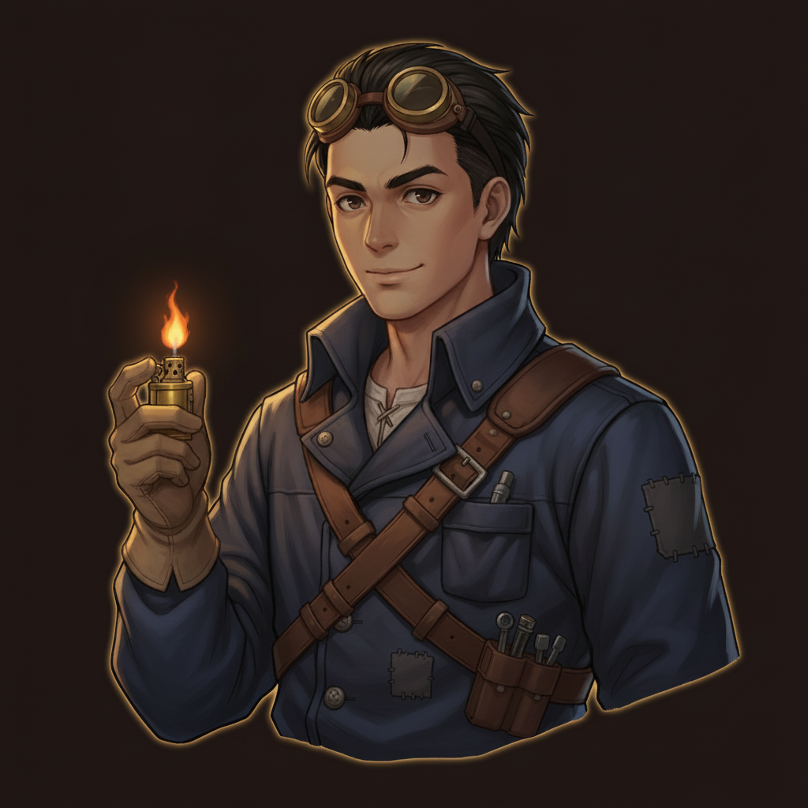

D2 · original — earnest, lighter raised

the design-round winner as generated.
v2 · the tinker moment

two gloved hands, lighter lid flipped open with engraved brass detail — the craftsman at work.
v4 · the warm one

eyes nearly closed, quiet kind smile — same pose, much warmer temperature.
v1 · softer smile (near-copy)
marginally softer expression, otherwise the original pose.
v3 · lopsided grin (near-copy)
slight grin and raised brow, otherwise the original pose.
v5 · calm half-smile (near-copy)

the low-angle/collar-up instructions were ignored; near-identical.